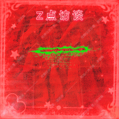

Z世代领导的几场社会运动在亚洲各地同时爆发，产生了深远影响。Z世代描绘革命的方式和社交媒体的作用使这些运动独一无二。因此，本次活动以新闻发布会的形式，采访了来自印度尼西亚的Z世代活动人士muzeian和lili，讨论Z世代社会运动的形式和特征。 From 8 PM to 11 PM, several social movements led by Generation Z erupted concurrently across Asia, generating profound impact. The way Generation Z depicted revolution and the role of social media made these movements unique. Therefore, this event took the form of a press conference, interviewing Generation Z activists from Indonesia, including muzeian and lili, to discuss the forms and characteristics of Generation Z social movements.